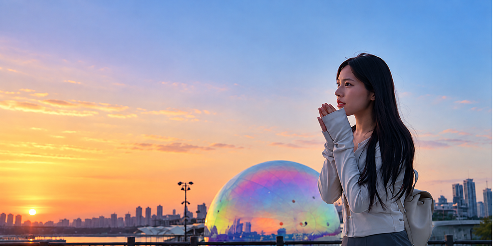

| 14:30 | 인천공항체크인·출국심사·대기 · MU8604 |  |
| 18:25 | 인천 출국2시간 30분 · FM828 공동운항 | |
| 19:55 | 푸둥 환승약 4시간 · 수하물 연결 확인 |  |
| 23:50 | 싱가포르행MU543 · 5시간 35분 · 기내박 | |
| 05:25 | 창이공항 도착다음 날 · 터미널 3 |  |
싱가포르는 한국보다 1시간 느립니다.
NO. SG-261003 · 1인

주슬기의 여행
말레이시아 조호바루
인천 → 상하이 → 싱가포르 → 조호바루
| 14:30 | 인천공항체크인·출국심사·대기 · MU8604 | |
| 18:25 | 인천 출국2시간 30분 · FM828 공동운항 | |
| 19:55 | 푸둥 환승약 4시간 · 수하물 연결 확인 | |
| 23:50 | 싱가포르행MU543 · 5시간 35분 · 기내박 | |
| 05:25 | 창이공항 도착다음 날 · 터미널 3 | |
싱가포르는 한국보다 1시간 느립니다.
| 05:25 | 창이 도착입국·수하물 약 1시간 20분 | |
| 06:45 | 호텔 이동·짐 보관MRT 약 1시간 · 체크인은 이후 | |
| 08:20 | 정비·자유시간오후까지 · 1–2곳만 선택 | |
| 숙박 | 머큐어 아이콘1박째 |
동물원 · 리버 원더스 · 버드 파라다이스 · 나이트 사파리 · 리틀인디아 · 아랍스트리트 · 부기스 · 오차드 · 보타닉가든 · 뎀시힐 · 이스트코스트
| 10:00 | 머라이언·에스플러네이드플라이어는 선택 · 헬릭스 브리지로 이동 |  |
| 12:30 | 마리나 베이 샌즈점심 포함 · 스카이파크 선택 |  |
| 16:00 | 가든스 바이 더 베이플라워 돔 → 클라우드 포레스트 → 슈퍼트리 |  |
| 19:45 | 슈퍼트리 · 스펙트라21:00 스펙트라 · 19:10까지 자리 |  |
| 21:30 | 라우파삿 후 호텔2박째 · 식비 별도 |  |
| 09:00 | 호텔 출발MRT · 센토사 익스프레스 |  |
| 10:00 | 유니버설 스튜디오6–8시간 · 88,400원 |  |
| 폐장 | 호텔 복귀3박째 · 다른 센토사는 없음 |
| 09:00 | 포트캐닝 트리터널오전 일찍 |  |
| 10:00 | 선택 A 또는 B14:30까지 하나만 |  |
| 15:00 | 불아사17:00 전 내부 관람 |  |
| 16:00 | 차이나타운마켓 · 마리암만 · 파고다 |  |
| 19:30 | 클락키 크루즈약 40분 · 이후 힐 스트리트 경찰서 |  |
| 숙박 | 머큐어 아이콘4박째 |
A 국립박물관 → 차임스 → 래플스 → 세인트 앤드류
B 차임스 → 래플스 → 세인트 앤드류 → 내셔널 갤러리
| 08:30 | 국경 이동·입국약 2시간 · 택시 90,000원 |  |
| 11:30 | 구도심옛 중국사원 · 탄히옥니 |  |
| 13:30 | 아부바카르 모스크Grab · 입장 확인 |  |
| 15:00 | KSL · 시티스퀘어국경이 밀리면 한 곳 생략 |  |
| 19:00 | 파사르 카라트야시장 |  |
| 12:00 | 체크아웃·자유시간짐은 호텔 보관 | |
| 13:30 | 국경·공항 이동금요일 혼잡 · 약 4시간 · 택시 90,000원 |  |
| 17:30 | 쥬얼 창이레인 보텍스 · 20:00 라이트 쇼 |  |
| 21:55 | 체크인·출국MU544 · 10.10 00:55 출발 | |
| 00:55 | 싱가포르 출국MU544 · 5시간 25분 | |
| 06:20 | 푸둥 환승약 3시간 · 수하물 연결 확인 | |
| 09:10 | 상하이 출국MU5041 · 1시간 45분 | |
| 11:55 | 인천공항 도착입국·수하물 | |
| 항공왕복 | 450,000 |
| 숙박싱가포르 4박 · 조호바루 1박 | 850,000 |
| 교통·입장MRT · 국경택시 2회 · 유니버설 | 300,300 |
| 식비·예비 | 726,300 |
쇼핑과 선택 관광 입장료는 제외. 환율과 택시 견적은 예약 전 확인.
사진 Wikimedia Commons · CC BY / CC BY-SA / CC0